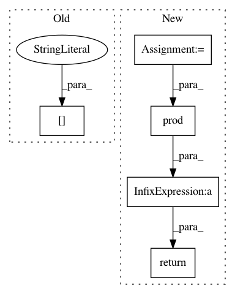

cf767a1297d67caf41577508aacc7cbc24ae8f14,scripts/gan/stylegan/modules.py,EqualLinear,hybrid_forward,#EqualLinear#Any#Any#,116
Before Change
def hybrid_forward(self, F, x, **kwargs):
new_weight = compute_weight(kwargs["weight_orig"])
self.linear.params[self.weight_key].set_data(new_weight)
return self.linear(x)
After Change
def hybrid_forward(self, F, x, **kwargs):
size = kwargs["weight"].shape
fan_in = prod(size[1:])
multiplier = sqrt(2.0 / fan_in)
out = F.FullyConnected(x, kwargs["weight"]*multiplier, kwargs["bias"], num_hidden=self.num_hidden)
return out
class AdaptiveInstanceNorm(nn.HybridBlock):
def __init__(self, in_channel, style_dim):
In pattern: SUPERPATTERN
Frequency: 3
Non-data size: 5
Instances
Project Name: dmlc/gluon-cv
Commit Name: cf767a1297d67caf41577508aacc7cbc24ae8f14
Time: 2020-09-16
Author: 43100519+xdeng7@users.noreply.github.com
File Name: scripts/gan/stylegan/modules.py
Class Name: EqualLinear
Method Name: hybrid_forward
Project Name: dmlc/gluon-cv
Commit Name: cf767a1297d67caf41577508aacc7cbc24ae8f14
Time: 2020-09-16
Author: 43100519+xdeng7@users.noreply.github.com
File Name: scripts/gan/stylegan/modules.py
Class Name: EqualConv2d
Method Name: hybrid_forward
Project Name: raghakot/keras-vis
Commit Name: 1cb6edf4c090461a7e43bfd1b866aaba4b02cabe
Time: 2017-05-07
Author: ragha@outlook.com
File Name: vis/regularizers.py
Class Name:
Method Name: normalize